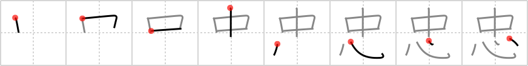

忠
← →
loyalty

Reading:
On-Yomi: チュウ
Heisig story:
In the middle of a . . . heart.
Koohii stories:
1) [CharleyGarrett] 1-6-2007(155): Their true loyalty exists in the middle of their hearts.
2) [dwhitman] 26-10-2007(123): Your loyalty is to what's in your heart.
3) [zardoz73] 25-8-2008(64): Hachiko, the most loyal dog of all, has a statue in his honor in the middle of the heart of Shibuya.
4) [frozach] 1-8-2007(32): After the British soldiers executed the French archers, they dissected their bodies, only to find French flags INSIDE them, wrapping around their HEARTS. Now that shows true LOYALTY.
5) [adhmm] 22-4-2008(26): The evil genius guaranteed himself the loyalty of his minions by placing explosives in the middle of their hearts.